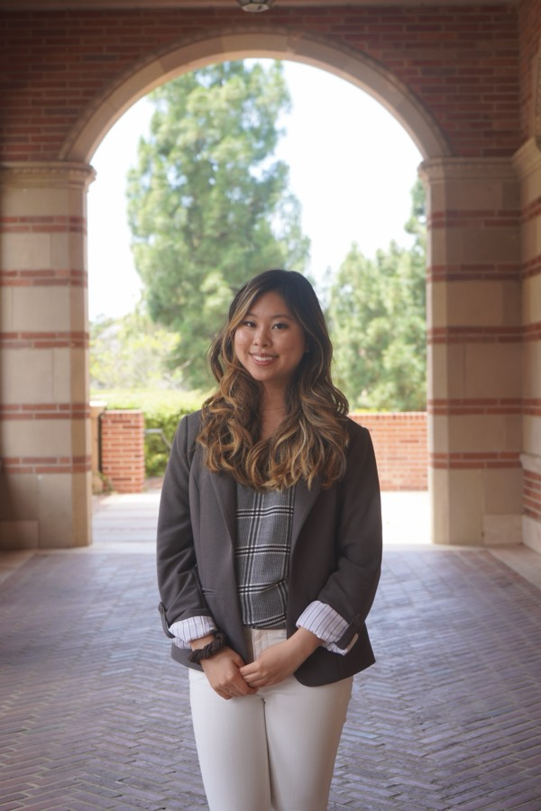

About Us
UCLA’s first undergraduate dermatology student organization.

Our Founding
While interning at the Rhode Island Department of Education, our original founder, Kelly, witnessed the lack of government funding within the education sector towards classes considered “extracurricular,” such as preventative health courses. The lack of these funds is especially prominent at schools classified as Title I, which are predominantly located within underserved communities.
Kelly could not understand how the right to health curriculums that teach students to make informed lifestyle decisions could be considered “extracurricular.” By founding Dermatological in 2021 at UCLA, Kelly hopes to teach students to prevent cumulative sun damage through early intervention, increase health literacy pertaining to skin health and hygiene, and fight towards a more equitable future for all patients.
Our Mission
Dermatological aims to build skin health and hygiene literacy skills from the ground up today, so young adults have the foundation required to make informed decisions tomorrow. Targeting the knowledge gap pertaining to general skin diseases, such as sun damage and broad dermatitis, our organization aims to increase awareness amongst members and the general LA population to be alert for signs and symptoms associated with common skin conditions. Moreover, the organization simultaneously encourages mindfulness regarding mental health issues, such as psychophysiological disorders, that may arise from skin-related diagnoses.
Future Plans
Currently, Dermatological is working towards increasing our national presence through a national expansion to various educational institutes. As of January 2024, new branches of Dermatological have been established on UC Berkeley, Texas A&M University, University of Pittsburgh, Drexel University, and Marshall Fundamental High School campuses. We encourage newly established branches to focus on creating personalized curriculums and events to address the most pertinent issues within their surrounding communities. Our club hopes to continue these initiatives to enact nationwide efforts toward fostering skin health and increasing health literacy.